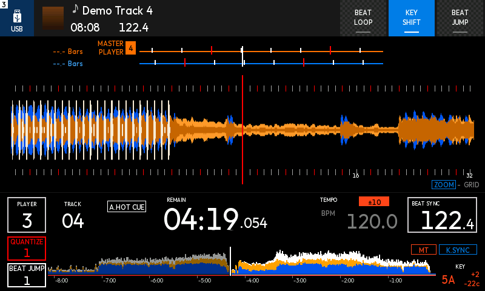
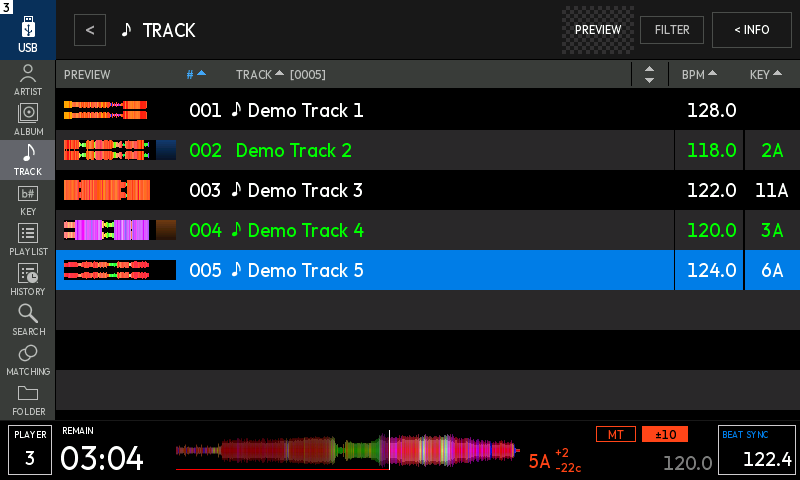

Cueline Builder
Make the Cueline firmware update for the CDJ-2000NXS2 from your own official Pioneer 1.87 update file.
Bienvenido: elegí tu C2KNXS2.UPD oficial 1.87 y el navegador arma el update de Cueline. Tu archivo nunca sale de tu computadora.
Everything runs in this browser tab. Your file is never uploaded: the only things this page downloads are its own files and the Python runtime (Pyodide, from cdn.jsdelivr.net). No analytics, no cookies.
What is Cueline?
Cueline is a free, unofficial firmware for the Pioneer CDJ-2000NXS2 that gives it screens in the style of the CDJ-3000: a new player screen with smooth 60 fps scrolling waveforms (RGB, 3BAND or BLUE), a touch browser with mini waveforms and BPM / KEY columns, SOURCE and LINK lists, INFO, SHORT CUT and UTILITY in the 3000 layout, a phase meter that can show the master deck's waveform, track preview from the list, and a light theme. Your music, your rekordbox USB sticks and Pro DJ Link keep working as before.
Cueline es un firmware gratuito y no oficial para el CDJ-2000NXS2 con pantallas al estilo del CDJ-3000: ondas a 60 fps, browser táctil con mini ondas, medidor de fase con la onda del master, preview desde la lista y tema claro. Tu música, tus pendrives de rekordbox y Pro DJ Link siguen funcionando igual.


What to expect from the update
- It installs like an official update from a USB stick and takes a few minutes. Coming from the official firmware you keep your deck settings.
- After it, the deck looks different but plays the same: new screens and waveforms; the audio, the jog, the pads and your libraries are untouched. UTILITY → INFO → BUILD shows the Cueline build, and the deck's version reads 2.20.
- This version (2.3) brings KEY SHIFT and KEY SYNC back with a new engine that works inside the deck's own MASTER TEMPO engine, tested on real decks, and fixes a display freeze of 2.2 (the screen stopped for about 2½ minutes when a loop became active). If you run Cueline 2.2 or older, update to 2.3: it installs straight over them.
- You can always go back to the official firmware with the official 1.87 update (steps at the end of this page).
- It is unofficial: it can have bugs. Try it at home before a gig, and keep the official 1.87 file. The deck's own menus come in seven languages, Cueline's own screens are in English; Link Cue preview on headphones needs a DJM-A9.
Qué esperar: se instala como un update oficial en pocos minutos; la deck se ve distinta pero suena y se toca igual; 2.3 trae de vuelta KEY SHIFT y KEY SYNC con un motor nuevo, probado en decks reales, y arregla un congelamiento de pantalla de 2.2 al activar un loop (si tenés 2.2 o anterior, actualizá a 2.3); siempre podés volver al firmware oficial con el update 1.87; es no oficial, probalo en casa antes de tocar.
1 · Disclaimer
Disclaimer: Bricking your CDJ-2000NXS2 is hard but not impossible. The main risk is a power cut while the update is being written (flashing). Use a UPS if possible, don't touch the deck or unplug the USB stick during the update, and keep the official 1.87 update to go back to stock. Use at your own risk -- this project is unofficial and provided as-is, without warranty (see LICENSE).
2 · Your official update
3 · Build
- Check the input is the official 1.87
- Load the Python runtime
- Patch and pack the GUI image
- Patch and pack the MAIN image
- Verify the result against the release sha256
Usually under a minute. Keep this tab open and in front.
4 · Download and install
- Copy this file alone to the root of a small FAT32 USB stick and update the deck as with an official update.
- Coming from the official firmware? That is all — no factory reset needed.
- Coming from Cueline 2.1 or 2.1.1? The same — no factory reset needed.
- Only if the deck runs a build with the same or a higher version (a DEV or test build, another custom firmware): first unplug the Pro DJ Link (LAN) cable — while LINK is active the player does not allow it — then UTILITY → DUPLICATION → DEFAULT (factory reset: it erases the deck settings), or the update is skipped.
- Never switch the deck off during the update.
Back to stock: unplug the LAN cable, UTILITY → DUPLICATION → DEFAULT, then install the official 1.87 (details).